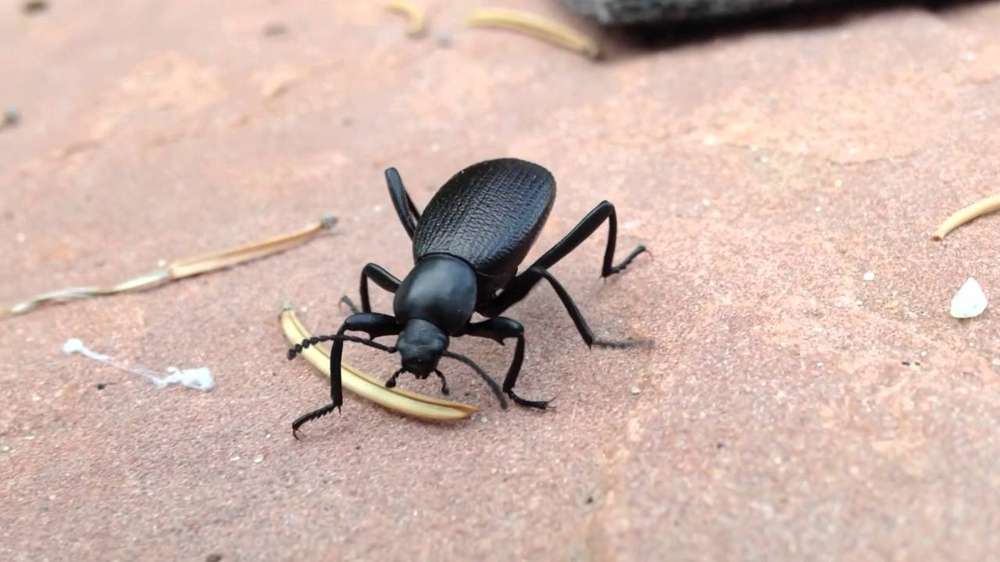

Esta es la página provisional en la que se trata todo respecto al parque ecológico
"EL PINACATE", ubicado en Sonorita bb. Este parque recibe su nombre por los escarabajos
que habitan en estas tierras, conocidos como "Pinacates". Estos escarabajitos están
bien mensos y chocan con todo porque vuelan muy torpemente.
